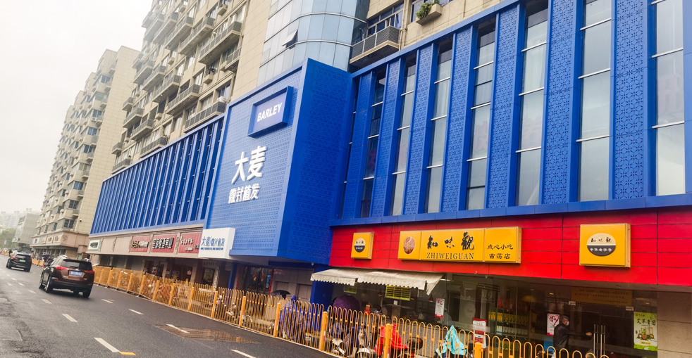

為您需求量身訂製的完整植髮解決方案

個人化髮際線設計與植髮，打造自然效果。我們的專業外科醫生使用先進的微針技術，為您打造與臉部特徵相得益彰的客製化髮際線，恢復年輕外觀。

以精準微針種植為稀疏區域增加密度。我們先進的技術在保持自然生長方向的同時提供更高密度，為您帶來更豐盈、更厚的頭髮。

為頭頂和髮旋禿頭提供完整修復。我們使用獲得專利的微針技術，為從早期稀疏到晚期禿頭的所有掉髮階段提供完整解決方案。

精準種植的自然眉毛修復。我們的專家仔細設計和種植符合您臉部美學的眉毛，恢復豐盈和輪廓。

以藝術性種植打造完美鬍子或八字鬍。無論您想填充斑駁區域或打造完整的陽剛鬍子，我們的專業團隊都能幫助您達成理想的外觀。

針對各種掉髮情況的完整治療。我們提供一系列非手術治療，包括藥物治療、PRP和頭皮護理，幫助防止進一步掉髮並促進健康生長。
看看我們患者達成的驚人轉變


與滿意患者的珍貴時刻

成功手術後與醫療團隊合影

與醫生慶祝絕佳效果

另一位滿意患者分享喜悅

出院前與專家合影

治療後與陳醫生開心合影

開心的患者展示新樣貌
聽聽全球滿意患者的分享
"在Google搜尋「植髮推薦」找到大麥，他們的微針植髮技術太厲害了！效果非常自然，我的自信心終於回來了。大麥真是台灣植髮的好選擇！"
"香港植髮診所我比較了好多家，最後選了大麥。從諮詢到手術全程都很專業，醫師團隊很有經驗，真的很推薦給需要的朋友！"
"I came from the US to Shanghai for the surgery, and every step of the journey was worth it. The microneedle technology is incredible, and recovery was much faster than I expected!"
"在Bing上看到大麥植髮的評價很不錯，過來做了FUE植髮。價格合理，效果又好，毛囊存活率很高，真的是澳門植髮的優質選擇！"
"中國台灣植髮價格很貴，專程來到大麥做無剃髮植髮。360度種植筆做出來的髮際線超自然，朋友們都看不出我有植髮，太值得了！"
"18年經驗加上10萬多個成功案例，大麥植髮真的很有說服力。我的頭髮加密效果很自然，就連理髮師都看不出痕跡，太感謝了！"
體驗我們現代舒適的設施

我們先進的設施

在我們的尊貴休息室放鬆

無菌與先進

隱私與專業

舒適的術後空間

溫馨的入口
進一步了解我們的治療和手術
點擊複製聯絡資訊
15810155700
+86 13730143529
hairtransplant@qq.com